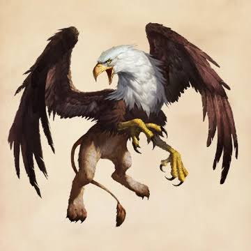

🦅 Кто такой грифон?
Грифон — легендарное мифическое существо, сочетающее в себе признаки двух сильных животных. Его передняя часть состоит из головы, клюва, крыльев и когтей орла, а задняя часть — из тела, лап и хвоста льва. Благодаря этому грифон считается символом силы, храбрости и мудрости.
📜 История
Легенды о грифонах появились тысячи лет назад. Их изображения находили в древних странах, где люди верили, что эти существа охраняют золото, драгоценные камни и священные места. Во многих историях грифоны помогали героям или были хранителями древних тайн.
✨ Внешний вид
- 🦅 Голова орла.
- Огромные крылья.
- 🦁 Тело льва.
- 🦴 Острые когти.
- 👁️ Очень хорошее зрение.
- 🥇 Золотистые или коричневые перья.
⭐ Способности
- Быстро летает.
- 💪 Обладает огромной силой.
- 👀 Видит добычу с большого расстояния.
- 🛡️ Защищает сокровища.
- ⚔️ Очень смелый в бою.
- 🧠 Отличается высоким интеллектом.
🌍 Где живёт?
По легендам грифоны живут высоко в горах, на неприступных скалах или в древних храмах. Они выбирают места, куда трудно добраться человеку.
📖 Интересные факты
- 🏰 Грифонов часто изображали на гербах рыцарей.
- 🪙 Они считались хранителями золота.
- 📚 Встречаются в книгах, фильмах и играх.
- 🦁 Лев символизирует силу, а орёл — свободу.
- ✨ Поэтому грифон объединяет лучшие качества обоих животных.
💡 Заключение
Грифон — одно из самых величественных мифических существ. Он символизирует смелость, мудрость, благородство и защиту. Несмотря на то что грифоны существуют только в легендах, они остаются популярными героями фэнтези.